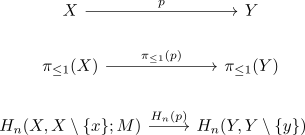
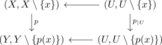
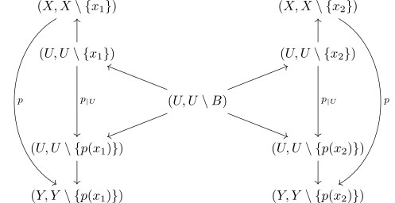

covering map and natural isomorphism of orientation functor
Proposition
Let $p: X \rightarrow Y$ be a countable sheeted covering map where $X$ is a manifold Then there exists a natural transformation
\begin{align*}
\nu_X \cong \nu_{Y} \circ \pi_{\leq 1}(p)
\end{align*}
given by
\begin{align*}
p: H_n(X, X \setminus \{x\};M) \rightarrow H_n(Y, Y \setminus \{y\};M)
\end{align*}

Proof
isomorphism
Consider the maps of pairs

results in the commutaive diagram
Here all other morphisms are isos, either by excision for local homology or $p_{\vert U}$ as homeomorph
naturality
Let $\lambda: [0,1] \rightarrow X$ be a path w.l.o.g. we may cover $Y$ by $U_i$ which are homeomorphic to $\mathbb{R}^n$ and covered by some $\coprod U$ Then

commutes.
Hence naturality follows.